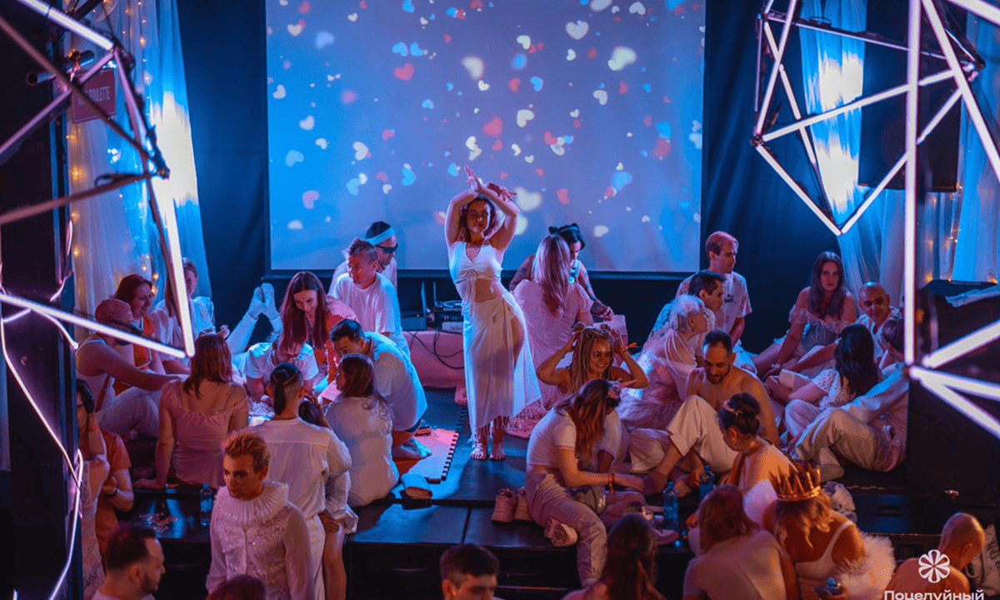

Как стать
звездой
вечеринки:
7 простых шагов
к успеху

Описание описание описание описание
Вечеринка — это твоя сцена, а ты — главный герой!
Картина Карела Фабрициуса «Щегол» для одноименного романа Донны Тартт не просто красивая отсылка и даже не сюжетный «макгаффин». Вокруг нее строится вся жизнь главного героя — мальчика по имени Тео, который получил ее совершенно случайно. Это полотно определяет и его судьбу, и стиль книги, и ее систему образов книги.
Какие же параллели между картиной и сюжетными линиями скрываются в романе? К каким еще произведениям нас отсылает Донна Тартт? И почему она считает, что искусство необходимо человеку? Сейчас разберемся.
Будь уверен в себе

Прямая походка, искренняя улыбка и дружелюбие сразу создают образ человека, с которым хочется общаться.
Уверенность всегда притягивает взгляды. Прямая походка, искренняя улыбка и дружелюбие сразу создают образ человека, с которым хочется общаться. Чем комфортнее ты себя чувствуешь, тем легче это передать другим!
Какие же параллели между картиной и сюжетными линиями скрываются в романе? К каким еще произведениям нас отсылает Донна Тартт? И почему она считает, что искусство необходимо человеку? Сейчас разберемся.
Картина Карела Фабрициуса «Щегол» для одноименного романа Донны Тартт не просто красивая отсылка и даже не сюжетный «макгаффин». Вокруг нее строится вся жизнь главного героя — мальчика по имени Тео, который получил ее совершенно случайно. Это полотно определяет и его судьбу, и стиль книги, и ее систему образов книги.
Уверенность всегда притягивает взгляды. Прямая походка, искренняя улыбка и дружелюбие сразу создают образ человека, с которым хочется общаться. Чем комфортнее ты себя чувствуешь, тем легче это передать другим!
Уверенность всегда притягивает взгляды. Прямая походка, искренняя улыбка и дружелюбие сразу создают образ человека, с которым хочется общаться. Чем комфортнее ты себя чувствуешь, тем легче это передать другим!
Уверенность всегда притягивает взгляды. Прямая походка, искренняя улыбка и дружелюбие сразу создают образ человека, с которым хочется общаться. Чем комфортнее ты себя чувствуешь, тем легче это передать другим!
Выбери яркий наряд
Картина Карела Фабрициуса «Щегол» для одноименного романа Донны Тартт не просто красивая отсылка и даже не сюжетный «макгаффин». Вокруг нее строится вся жизнь главного героя — мальчика по имени Тео, который получил ее совершенно случайно. Это полотно определяет и его судьбу, и стиль книги, и ее систему образов книги.
Какие же параллели между картиной и сюжетными линиями скрываются в романе? К каким еще произведениям нас отсылает Донна Тартт? И почему она считает, что искусство необходимо человеку? Сейчас разберемся.
07.03.2025